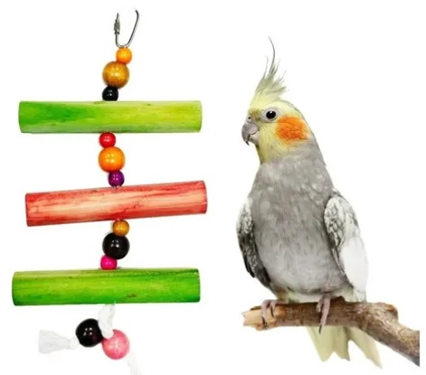
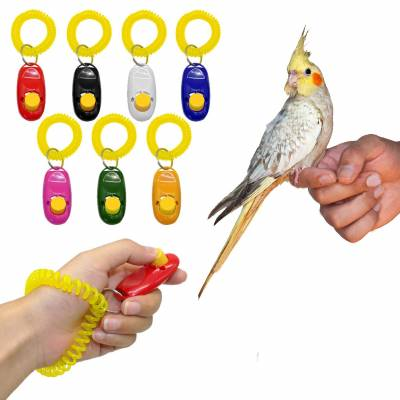

Mundo Ninfa
Estimulación
Debes interactuar con tu ninfa, por más cansado que estés. Posiblemente un/a compañero/a de su especie, reducirá las horas que debes interactuar con tu ave, pero igualmente buscará estimulación humana, en especial si lo criaste desde pequeño. Si tu ave es salvaje o ha sido descuidada por su dueño anterior te tomará mucho más tiempo (meses, años) entablar un lazo y dinámica con ella. Sé constante y paciente.
Enriquecimiento ambiental
La ambientación es de suma importancia para la salud mental y física de nuestras aves, ellas en la naturaleza no solo comen, beben y descansan, también pasan gran parte de su tiempo recreándose y formando lazos con otros miembros de su especie. Deben tener una cantidad de elementos distractivos, recreativos y estimulantes.
Perchas
- Cemento/piedra: estas ayudan a desgastar de forma natural las uñas de nuestras aves (el tamaño XS y S es para ninfas)
- Madera: de distinto diámetro/grosor.
- Perchas de cuerda natural (yute/cáñamo): además de posadera les servirá a nuestras aves para entretenerse picando las fibras
Puentes, redes y escaleras
- APTAS: siempre fabricadas con materiales naturales como cáñamo/yute, madera y corcho.
- NO APTAS: redes de fibras sintéticas, puentes plásticos que no tienen buena superficie de agarre y el diámetro de los escalones tiende a ser muy pequeño.
Cómo adiestrar a una cacatúa ninfa
Puede ser muy divertido acariciar, jugar o incluso bailar con una cacatúa ninfa; no obstante, requerirás un poco de tiempo y esfuerzo para lograrlo. Si vas a adiestrar a una cacatúa ninfa, es esencial que lo hagas poco a poco, brindándole un entrenamiento en sesiones cortas y en un área tranquila. Si tienes una cacatúa joven, es probable que tengas más suerte y que su entrenamiento pueda avanzar con más rapidez.
-
Considera entrenarla con un clicker. Conforme el entrenamiento se vuelva más difícil, es probable que tu ave tenga dificultades para determinar la razón por la que le das una golosina. Usa un “clicker” o haz un sonido breve distintivo (golpeando un bolígrafo) siempre que el ave muestre un buen comportamiento. Esto captará la atención del ave mientras le traes una golosina. Cuando el ave esté bien entrenada, podrás premiarla empleando únicamente el sonido del clicker o del bolígrafo; mientras tanto, la golosina seguirá siendo una parte esencial del entrenamiento.
- Se recomienda emplear un clicker o algún otro sonido distintivo, en lugar de una orden verbal, ya que sonará del mismo modo todo el tiempo y es poco probable que el ave lo oiga fuera del entrenamiento.

- Si deseas enseñarle otros trucos, sigue empleando el entrenamiento con clicker. Este entrenamiento es un instrumento excelente para el adiestramiento de mascotas. Siempre que empieces a enseñarle una nueva orden a tu cacatúa, emplea un clicker o haz un ruido distintivo golpeando un bolígrafo justo cuando muestre un buen comportamiento. Tráele una golosina inmediatamente después, y sigue entrenándola todos los días hasta que responda a la orden recibiendo el sonido del clicker como único premio.
- Enséñale a la cacatúa a hablar. Cuando la cacatúa se sienta relajada y feliz, repite una frase unas cuantas veces empleando una expresión facial y un tono animados. La cacatúa podría sentir interés por esa palabra si te mira y muestra una reacción, como inclinar la cabeza o dilatar sus pupilas. Pronuncia la palabra con frecuencia, pero detente si la cacatúa se aburre. Prémiala con una golosina si intenta imitarte.